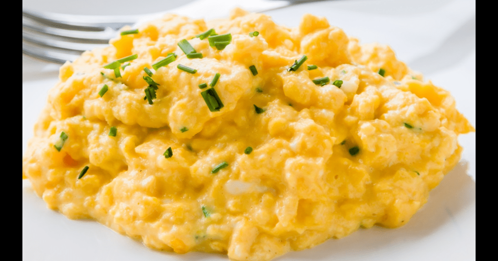

Creamy Scrambled Eggs: Gordon Ramsay's Recipe

How to make the eggs
Ingredients
- 6 Eggs
- 15g Butter
- Salt and Pepper
- Creme Fraiche(Sour Cream)
- Chives
Steps
- In a deep saucepan, crack 6 cold eggs. To make smaller batches, use a 2-to-1 egg-to-butter ratio.
- Put the pan on high heat, and add the butter.
- Stir and turn the eggs constantly with a rubber spatula until they start to thicken, scraping the bottom of the pan as you go.
- After 30 seconds, take the pan off the heat but keep stirring. Put the heat back on after about 10 seconds. Repeat this process for 3 minutes.
- Remove the eggs from the heat at the last minute and season lightly with salt and pepper. For an extra creamy texture, stir in 1 tbsp of creme fraiche (sour cream).
- Serve with chopped chives as a garnish.